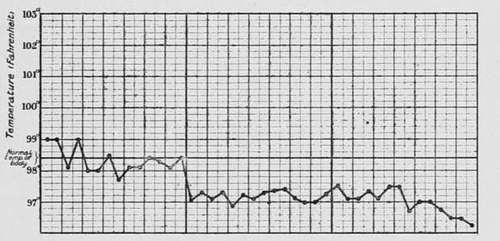
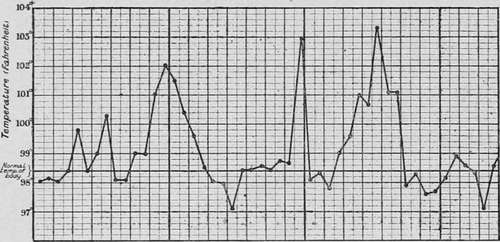
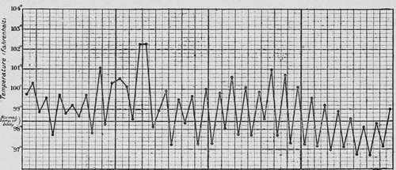
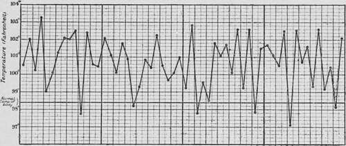
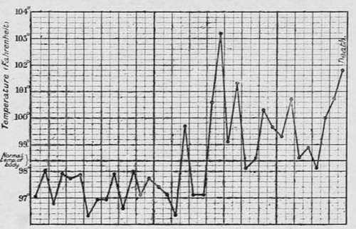

Temperature
Description
This section is from the book "Cancer And Other Tumours Of The Stomach", by Samuel Fenwick. Also available from Amazon: Cancer and other tumours of the stomach.
Temperature
The absence of fever in cancer generally has led to the impression that malignant disease of the stomach is a non-febrile complaint. As a matter of fact, however, nearly one third of all cases of gastric carcinoma exhibit an elevation of temperature at some period of their course, while occasionally the pyrexia is so prolonged and severe as to lead to serious errors of diagnosis (Hampeln, Devic and Chatin, Hanot). An analysis of our cases with reference to this point gives the following results :
Temperature normal or subnormal in | 68% |
Occasional elevation in | 17% |
Constant elevation in | 15% |
In the apyrexial cases, which constitute about two-thirds of the entire number, the temperature remains at or just below the normal point until a week or two before death, when it steadily falls to 97° or 96° F. Even in this condition, however, diurnal variations may still be observed. The lowest temperatures are usually met with in the autumn and winter months.
Fig. 30.-Chart showing the depressed temperature which usually accompanies the later stages of the disease. (London Temperance Hospital.).
Occasional attacks of fever may occur throughout the entire course of the disease, or they may develop only during its later stages. In the former case the sudden rise of temperature is often accompanied by chills, headache, or pains in the limbs, and the mercury in the thermometer may rise to 102° or 103° F., and remain at this point for two or three days. If defervescence takes place suddenly, it is often accompanied by sweating, vomiting, or diarrhoea, but when the fall occurs gradually it is not attended by special symptoms. Between the attacks the evening temperature often rises to 99° F.
Fig. 31.-Chart of a case of adeno-carcinoma of the body of the stomach, showing occasional attacks of fever. (London Temperance Hospital.).
Continued fever occurs in several forms. As a rule it is distinctly remittent, the evening reading being 100-101° and the morning 99-100° F. In other cases the temperature always falls below normal in the morning, and the chart consequently resembles one of suppuration or chronic phthisis. Both varieties may continue for several months, but with the progress of exhaustion the evening exacerbations become less marked, until an apyrexial condition supervenes. Finally, in rare cases the temperature remains constantly elevated above 100° F., and is accompanied by shiverings, sweatings, and other indications of septicaemia.
Fig. 32.-Chart of a case of soft cancerous growth of the posterior wall of the stomach, showing continued fever. (London Temperance Hospital.).
The origin of the fever has been variously attributed to ulceration of the growth, to the presence of metastases, to inflammation of the peritoneum, to general carcinosis, or to some other complication of the disease; but while it must be admitted that one or more of these conditions are often present in febrile cases, their not infrequent absence seems to indicate that none of them are absolutely essential to the production of pyrexia. A careful examination of the cases that occurred in our series indicates that the temperature varies according to (a) the situation and character of the neoplasm, (b) the severity of certain symptoms, and (c) the presence of secondary inflammation in the peritoneal or thoracic cavity.
(a) In the following table we have arranged the cases according to the site of the disease and the character of the temperature. It will be observed that when the neoplasm involved the pylorus febrile symptoms were present in only 20 per cent., while in disease of the body of the stomach and of the cardia they existed in 58 per cent, and 37 per cent, respectively.
Fig. 33.-Chart of septicaemia arising from cancer of the stomach. (London Temperance Hospital.).
Site of disease | No fever | Occasional fever | Constant fever |
Pylorus .... | 80% | 11% | 9% |
Cardia .... | 63% | 12% | 25% |
Walls and curvatures | 42% | 25% | 33% |
It has already been shown that morbid growths vary in character in different regions of the stomach, those which occupy the pylorus being often hard, contractile, and prone to superficial ulceration, while those situated upon the walls or curvatures of the organ are usually soft, rapidly growing, and liable to slough. It is possible, therefore, that the variations of temperature may depend as much upon the morphological peculiarities of the tumour as upon its situation. This suggestion is supported by the fact that while an elevation of temperature was only observed in 11 per cent, of the cases of scirrhus, nearly 53 per cent, of those described as medullary or adeno-carcinomata were accompanied by pyrexia. Of these latter cases, the great majority presented ulceration or metastases after death, but in 8 per cent, the growth was not associated with any complication visible to the naked eye. It is therefore probable that the softer forms of carcinoma, like certain sarcomata, are often attended by moderate pyrexia as the result of an extreme activity of cell-growth.
(b) The symptoms which exert the most important influence upon the temperature are dysphagia and vomiting. In every case where the disease was accompanied by difficulty of swallowing the temperature showed the same tendency to depression that occurs in other forms of starvation, and for many weeks before death indicated a state of collapse. The antipyretic effect of excessive vomiting may be due partly to progressive inanition, and partly to the elimination of pyogenetic substances produced by the disintegration of the neoplasm. In our series fever was present in 53 per cent, of those where vomiting was rare or absent, but only in 9 per cent, of those attended by frequent attacks of emesis.
Fig. 34.-Chart in a case of carcinoma of the stomach which proved fatal from pneumonia. (London Temperance Hospital.).
(c) Certain complications are usually accompanied by fever, especially inflammations of the peritoneum, pleura, and lung. In exactly one half of our cases where the temperature remained constantly elevated, recent peritonitis was found in the upper segment of the abdomen after death. In most instances this was due to malignant infection of the serous membrane, but in two perigastric suppuration had occurred from leakage through the base of the disease. Exudation into the pleura or acute pneumonia is often responsible for the pyrexia that develops during the last week of life (fig. 34).
Continue to:
- prev: Hemoglobin
- Table of Contents
- next: The Saliva